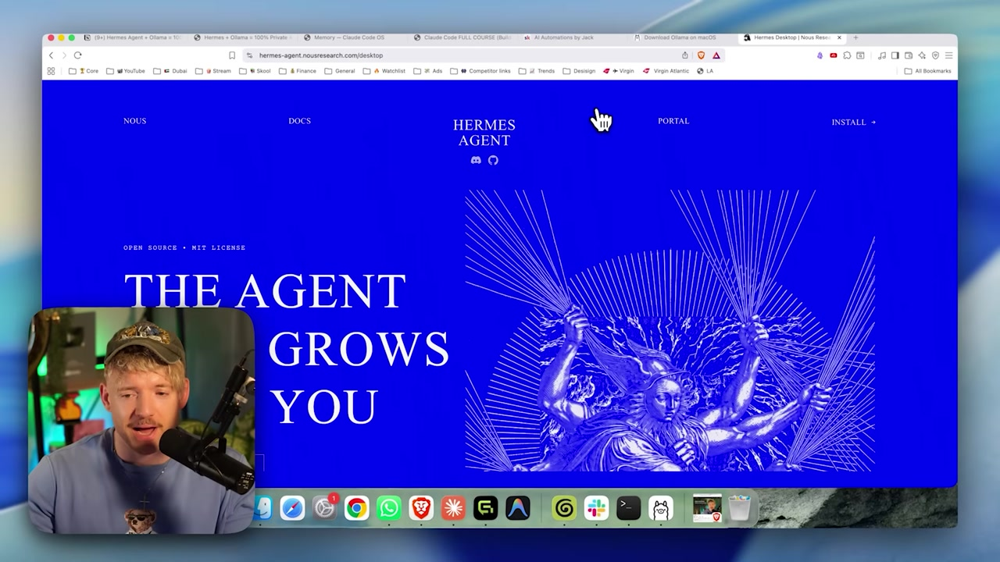
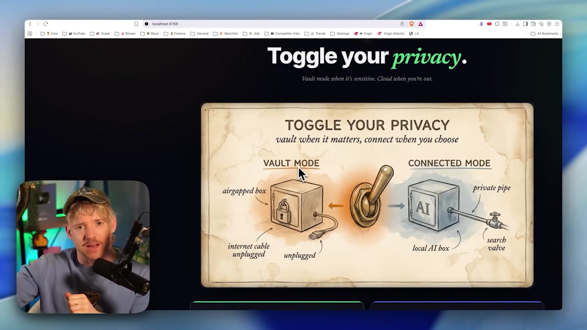

🤖 Projeto 2: Agente Hermes rodando local (Vault end-to-end)
O salto do Projeto 1: do chat para o agente inteiro. Voce vai conectar o modelo de 64k ao Agente Hermes, ligar o modo Vault (airgapped) e mandar o agente executar uma tarefa real — tudo sem um unico byte saindo da maquina. E o "santo graal" do curso: capaz, 100% privado e a $0.
A linha do projeto: do modelo de 64k ate a confirmacao de que nada saiu, com o Vault ligado no meio — o passo que torna o agente seguro para dados sensiveis.
🎯 Objetivo: o agente inteiro no Vault
A meta deste projeto e rodar o Agente Hermes de ponta a ponta usando so o seu modelo local, em modo Vault — isolado da internet. Diferente do Projeto 1 (que era um chat), aqui o agente age: usa ferramentas, executa tarefas, mas tudo dentro da sua maquina.

🧭 O que voce vai ter no fim
- •O modelo de 64k (do Modulo 2.4) ligado ao Hermes.
- •O agente operando em modo Vault, sem rede.
- •Uma tarefa real concluida 100% local.
- •A confirmacao de que nenhum dado saiu da maquina.
Novo aqui? "End-to-end" (ponta a ponta) quer dizer que o fluxo inteiro — do seu pedido ate o resultado — acontece sem sair da maquina. "Airgapped" e o termo de seguranca para um sistema fisicamente isolado da rede; o modo Vault simula isso desconectando o agente da internet.
Conceitos-chave
LLM + ferramentas: ele age, nao so responde.
Open-source, da Nous Research; voce e dono do fluxo.
Modo airgapped: o agente isolado da rede.
Do pedido ao resultado, tudo na sua maquina.
🪟 Ter o qwen3-coder-64k pronto
Objetivo da etapa: confirmar que o modelo de contexto 64k que voce criou no Modulo 2.4 esta disponivel no Ollama. O agente Hermes exige 64k de contexto — um modelo de chat comum nao serve, porque memoria e ferramentas ocupam muito espaco.
🎯 Conferir o modelo (e recriar, se preciso)
Comando para colar (objetivo: ver se o modelo de 64k existe):
ollama list
# procure por:
# qwen3-coder-64kSe ele NAO aparecer, recrie a partir do Modelfile do Modulo 2.4 (objetivo: derivar o modelo com 64k de contexto):
# Modelfile (conteudo):
# FROM <qwen3-coder:30b>
# PARAMETER num_ctx 65536
ollama create qwen3-coder-64k -f ModelfileComo verificar: ollama list mostra qwen3-coder-64k. O trecho <qwen3-coder:30b> e a parte variavel — e o modelo base que voce escolheu.
📊 Por que 64k, em numeros
- •65.536 tokens de contexto (≈ 25-30 mil palavras de "memoria de trabalho").
- •O agente gasta contexto com memoria, instrucoes e o resultado das ferramentas.
- •Sem folga de contexto, o agente "esquece" o inicio da tarefa no meio do caminho.
Atencao: contexto grande custa memoria. Um modelo com 64k pesa mais na RAM do que o mesmo modelo com contexto pequeno. Se a maquina apertar, e aqui que pode travar — confira o headroom de RAM (visto no Modulo 1.4).
Conceitos-chave
O parametro que define os 64k de contexto.
Deriva o modelo a partir de um Modelfile.
O Hermes pede 64k; chat comum nao serve.
Contexto grande pesa mais na RAM.
🔗 Conectar o modelo ao Hermes
Objetivo da etapa: garantir que o Hermes esteja atualizado e selecionar o seu modelo local como o cerebro do agente. Primeiro o comando real de atualizacao; depois a acao na interface para apontar o agente ao seu modelo.
🎯 Atualizar e checar o Hermes
Comando para colar (objetivo: deixar o Hermes pronto):
hermes update
# ao terminar, o painel mostra: "HERMES IS READY / Launch Hermes"Como verificar (o agente esta saudavel):
hermes status
qwen3-coder-64k local, e nao a nuvem.🖱️ Acao na interface (selecionar o modelo local)
- Abra o seletor de modelo do Hermes.
- Escolha o seu modelo do Ollama:
qwen3-coder-64k. - Confirme: o nome aparece no canto inferior direito.
Como verificar: o canto inferior direito mostra o seu modelo local selecionado.
Honestidade: selecionar o modelo e uma acao na interface, nao um comando de terminal. Os comandos reais do Hermes que voce usa aqui sao hermes update e hermes status; o resto e clicar no seletor.
Conceitos-chave
Atualiza o Hermes ("HERMES IS READY").
Mostra a saude do agente.
Onde voce aponta o agente ao modelo local.
Onde o modelo ativo aparece confirmado.
🗄️ Ligar o Vault (airgapped)
Objetivo da etapa: ativar o modo Vault, que isola o agente da rede — como puxar o cabo de internet. E a garantia tecnica de que nada vaza: o agente simplesmente nao tem por onde sair.

Selecione o modo Vault
Na interface, escolha Vault. O agente passa a usar so o modelo local.
Para ter certeza, desconecte a rede
Wi-fi off ou cabo desconectado — a prova fisica do airgap.
Confirme o estado
O Hermes indica que esta em Vault / offline.
✓ Em Vault voce GANHA
- ✓Dado de cliente/saude/IP nunca sai.
- ✓Funciona offline (aviao, off-grid).
- ✓$0 por uso, mesmo rodando muito.
✗ Em Vault voce CEDE
- ✗Sem busca na web fresca.
- ✗Sem o modelo de fronteira da nuvem.
- ✗A velocidade e a da sua maquina.
Sem ideologia: Vault nao e "sempre". E o modo certo para dado sensivel e para offline. Quando a tarefa for dificil e nao tiver dado sensivel, voce pode ir para Connected ou Cloud — e o que o Projeto 6 ensina.
Conceitos-chave
O agente isolado da internet.
Sem rede, o dado nao tem por onde sair.
Privacidade vira um botao que voce controla.
Privacidade total em troca de potencia da nuvem.
🧪 Tarefa real, 100% local
Objetivo da etapa: dar ao agente uma tarefa concreta e ver ele usar ferramentas para resolver — provando que ele nao so conversa, ele age. Tudo isso em Vault, sem rede.
🎯 Sugestoes de tarefa (acao no chat do agente)
- "Leia este arquivo e me de um resumo em 5 pontos."
- "Organize estas anotacoes soltas em uma lista de tarefas."
- "Escreva um rascunho de e-mail a partir destes topicos."
Como verificar: a tarefa termina com um resultado util, e voce ve o agente "trabalhando" (usando ferramentas), nao so respondendo.
📊 Calibre a expectativa
O modelo local roda no benchmark SWE-bench em torno de 74 (o Qwen citado no video, "runs on a laptop"), enquanto o topo da nuvem fica em ~88. Ou seja: muito capaz, mas nao e o modelo de fronteira. Para tarefas do dia a dia, em Vault, ele resolve.
A velocidade depende da sua maquina; a primeira resposta pode demorar mais (modelo carregando na memoria).
Dica: comece com uma tarefa que voce saberia fazer sozinho. Assim e facil avaliar se o agente acertou — e voce ganha confianca antes de delegar coisas maiores.
Conceitos-chave
O agente age (le, organiza, escreve), nao so fala.
Comece com algo que voce sabe avaliar.
Capaz, mas nao a fronteira da nuvem.
Depende do hardware; 1o load demora mais.
✅ Confirmar privacidade: nada saiu
Resultado esperado: um agente capaz que rodou uma tarefa real sem mandar nada para a internet. Com a rede desconectada e o Vault ligado, voce tem a confirmacao que torna o agente usavel com dados sensiveis — o objetivo do projeto.
🧾 Checklist de conclusao
ollama list mostra o qwen3-coder-64k.hermes status indica o agente saudavel.⚠️ Deu errado?
- ✗Agente nao acha o modelo: confirme o seletor e que o Ollama esta rodando.
- ✗"Contexto insuficiente": confirme que usou o modelo 64k, nao o de chat comum.
- ✗Travou/lento: contexto de 64k pesa na RAM — reduza outras tarefas abertas.
Auto-checagem (opcional): por que o agente precisa do qwen3-coder-64k, e nao de um modelo de chat comum?
🎯 Resumo do projeto
qwen3-coder-64k ligado ao Hermes via hermes update/status.Proximo projeto:
3.3 — Memoria, personas e skills: deixar o SO do agente com a sua cara.